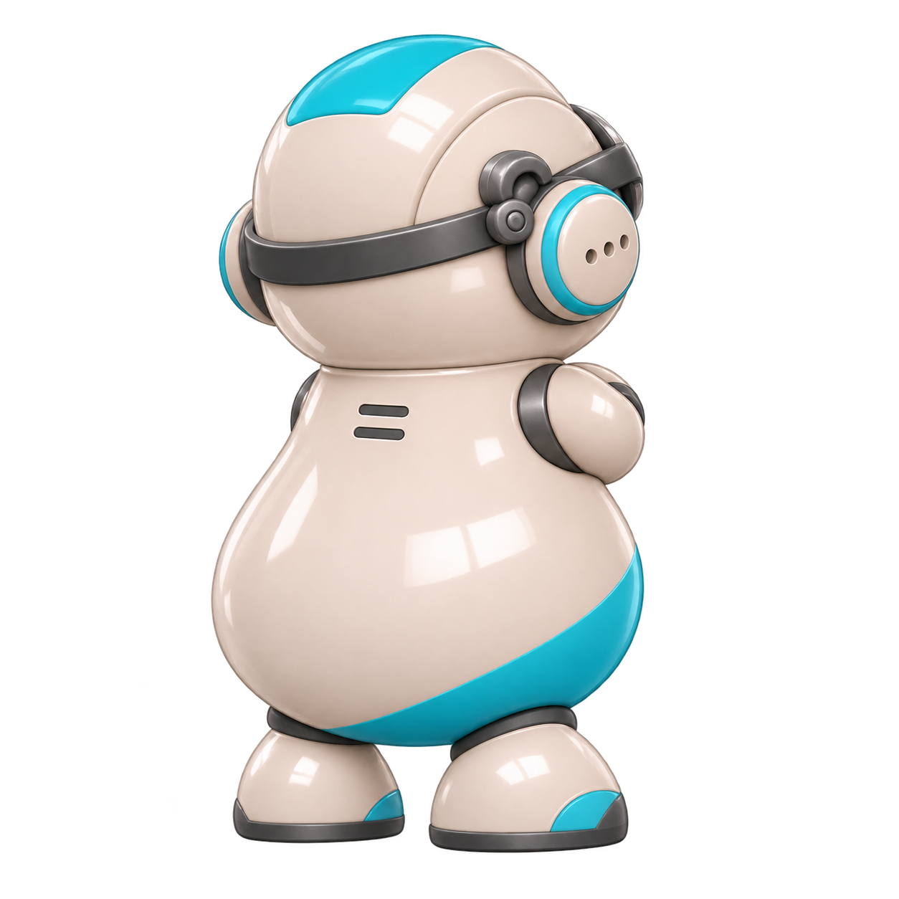

<div class="tg-launch-wrap"><button class="tg-launch" aria-haspopup="dialog" aria-controls="tg-dialog" aria-expanded="false"><span class="tg-mini" aria-hidden="true"></span><span>통이에게 물어보기 ↗</span></button></div>
<dialog id="tg-dialog" aria-labelledby="tg-dialog-title">
 <header class="tg-dialog-head"><h2 id="tg-dialog-title" tabindex="-1">아는 AI, <em>통이</em></h2><button class="tg-close" aria-label="통이 닫기">✕</button></header>
 <div class="tg-scroll"><section class="tongi-panel" id="tongi" aria-label="통이 뉴스 탐색" data-state="idle">
  <div class="tongi-character-area"><div id="tongi-speech" role="status" aria-live="polite">오늘은 어떤 이야기가 궁금하세요?</div><button class="tongi-character" type="button" aria-label="통이와 인사하기. 좌우로 쓰다듬으면 좋아해요."><span class="tongi-portrait" aria-hidden="true">
   <span class="tongi-pose tongi-pose-normal"></span>
   <span class="tongi-pose tongi-pose-search"></span>
   <span class="tongi-pose tongi-pose-happy"></span>
   <span class="tongi-pose tongi-pose-sulk"></span>
   <span class="tongi-pose tongi-pose-back"></span>
  </span></button></div>
  <div class="tg-pet-row" hidden><span>좌우로 살살 쓰다듬어 주세요.</span><button type="button" id="tg-forgive">쓰다듬기 ♡</button></div>
  <form class="tongi-form" role="search"><label class="tg-sr" for="tongi-query">통이에게 물어보기</label><input id="tongi-query" type="search" maxlength="200" autocomplete="off" placeholder="지금 어떤 이야기를 보고 싶어요?" enterkeyhint="search"><button type="submit" aria-label="콘텐츠 추천받기">↗</button></form>
  <div class="tongi-prompts"><button type="button" data-query="내 생활에 도움되는 것">내 생활에 도움</button><button type="button" data-query="새롭게 알게 되는 것">새롭게 알기</button><button type="button" data-query="잠깐 즐길 것">잠깐 즐기기</button></div>
  <div id="tongi-result" aria-live="polite" hidden></div><p class="tg-scope">비주얼뉴시스 안에서, 지금 궁금한 이야기를 함께 골라요.</p>
 </section></div>
 <footer class="tg-dialog-foot"><span>크리에이티브 디렉터 = 안재현</span><small>편집한 주제 기준 추천 · AI 답변 아님</small></footer>
</dialog>
